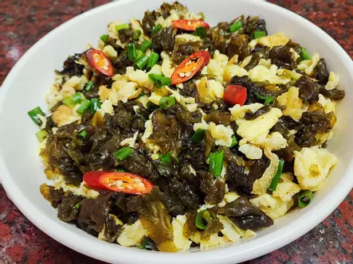

雨來菇炒蛋

雨來菇炒蛋
雨來菇炒蛋是一道令人垂涎的家常菜，將鮮嫩的雨來菇與滑順的雞蛋完美結合，展現出獨特的風味。
味道介紹
鮮香四溢：
雨來菇本身具有天然的香氣，經過快炒後更是鮮香撲鼻，讓人一聞就食慾大開。
滑嫩口感：
雞蛋的細膩口感與雨來菇的脆嫩相互交融，每一口都帶來令人愉悅的口感享受。
鮮甜滋味：
雨來菇的清甜與雞蛋的鮮美相得益彰，增添了整道菜的層次感，讓味覺更加豐富。
簡單卻不平凡：
雖然做法簡單，但卻能保留食材的原汁原味，讓人感受到家常料理的溫暖。
搭配廣泛：
無論是配米飯還是單獨享用，都能讓人倍感滿足，成為餐桌上的人氣選擇。
總的來說，雨來菇炒蛋是一道簡單卻充滿驚喜的美味佳餚，讓人每一口都能感受到食材的鮮香與自然，是值得一試的好味道！
返回菜單